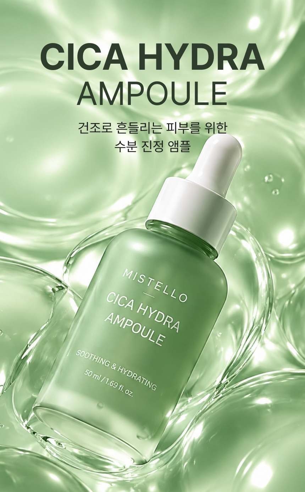
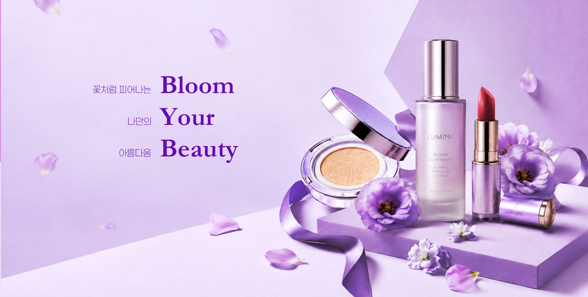
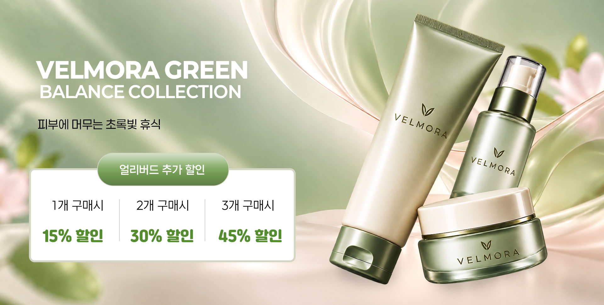
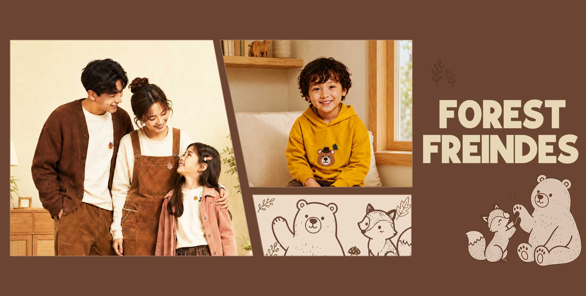
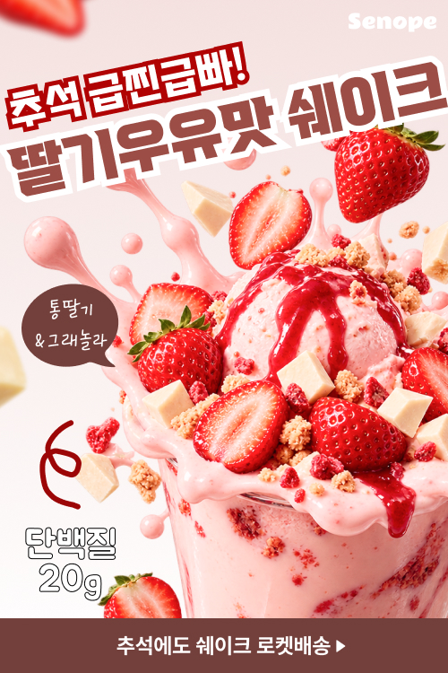
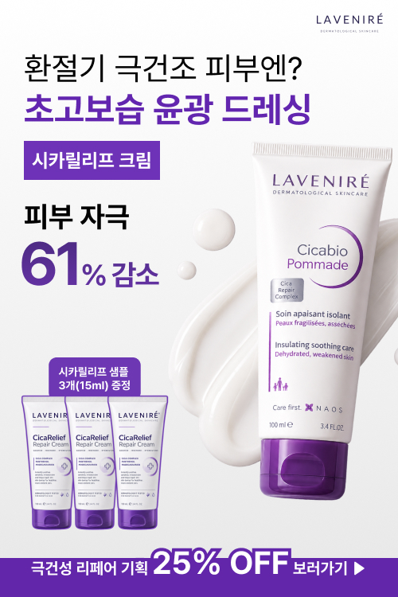
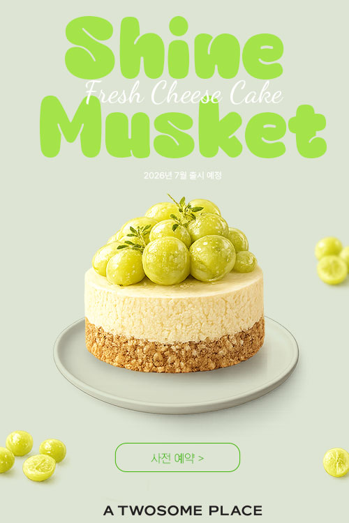
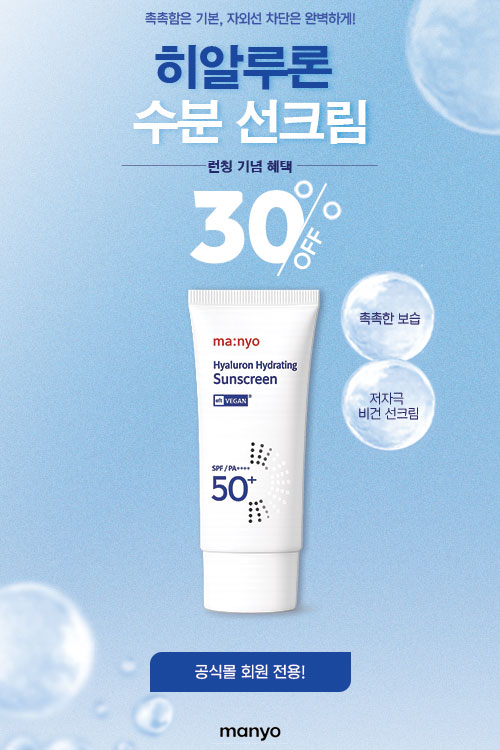
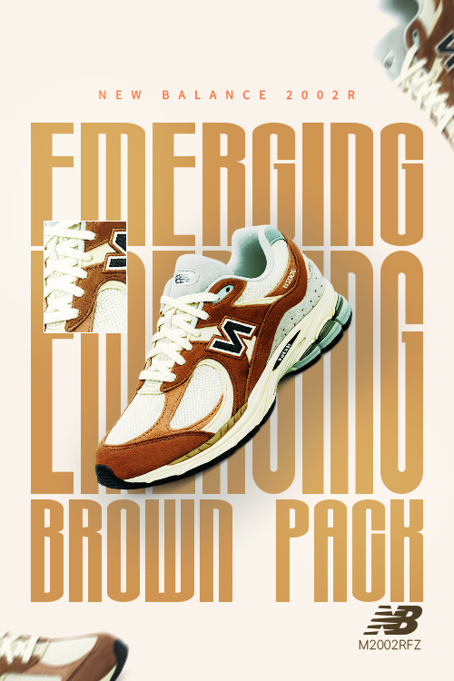

Product Detail · 02
Cica Hydra Ampoule
촉촉하고 맑은 수분감을 중심으로 제품의 진정 성분과 깨끗한 이미지를 시각적으로 전달한 앰플 상세페이지 디자인입니다.
Skincare · Visual DesignVisual Design Archive
작은 화면 안에서도 핵심이 먼저 보이도록.
목적과 메시지에 맞춰 구성한 비주얼 디자인 작업입니다.
제품과 프로모션의 핵심이 짧은 순간에도 명확하게 전달되도록 구성했습니다.

증상 중심의 헤드라인과 체크리스트를 배치해 진료 필요성을 빠르게 인지하고 상담으로 이어지도록 구성했습니다.

라벤더 컬러와 플라워 오브제로 화사한 발색과 광채 이미지를 강조한 시즌 뷰티 컬렉션 배너입니다.

보태니컬 무드의 제품 비주얼과 수량별 할인 정보를 결합해 컬렉션 인지도와 다중 구매를 함께 유도했습니다.

따뜻한 브라운 톤의 가족 이미지와 캐릭터 그래픽으로 친근한 패밀리·키즈 컬렉션의 감성을 전달했습니다.
혜택과 행동 유도 문구를 빠르게 읽을 수 있도록 정보의 크기와 순서를 설계했습니다.

딸기와 쉐이크의 풍부한 비주얼로 맛을 직관적으로 전달하고, 단백질 20g과 로켓배송 메시지로 구매 이유와 긴급성을 강조했습니다.

부드러운 핑크 톤과 크림 제형, 제품 패키지를 중심으로 민감 피부용 보습 이미지를 만들고 증정 혜택을 CTA에 집중시켰습니다.

보라색 포인트로 제품군을 각인시키고 피부 자극 감소, 샘플 증정, 할인 정보를 단계적으로 배치했습니다.

샤인머스켓의 산뜻한 컬러와 케이크 비주얼을 중심에 두고 예약 버튼까지 자연스럽게 시선을 연결했습니다.

수분감을 연상시키는 블루 톤과 할인율을 크게 강조해 제품 효능과 회원 혜택을 한 화면에서 전달했습니다.

어두운 시네마틱 키비주얼과 강한 레드 CTA를 대비시켜 작품의 긴장감과 즉시 시청 행동을 강조했습니다.
제품의 형태와 분위기를 중심으로 타이포그래피와 여백의 균형을 맞췄습니다.

선명한 핑크 톤과 대형 타이포그래피 사이에 제품을 리드미컬하게 배치해 컬러와 패키지를 각인시켰습니다.

곡선형 체어와 브라운·올리브 그래픽을 조합해 부드러운 형태와 편안한 착석감을 시각적으로 표현했습니다.

파스텔 분할 배경과 입체적인 제품 앵글로 컬러풀하고 컴팩트한 무선 키보드의 특징을 강조했습니다.

톤온톤 브라운 팔레트와 대담한 타이포그래피, 디테일 컷으로 소재감과 헤리티지 무드를 전달했습니다.
제품을 처음 보는 순간부터 특징을 이해하고 다음 행동으로 이어지도록 화면의 흐름을 구성했습니다.

제품의 기능과 감성적인 인상을 하나의 긴 흐름으로 연결한 상세페이지 디자인입니다.
상세 작업 보기 ↗
촉촉하고 맑은 수분감을 중심으로 제품의 진정 성분과 깨끗한 이미지를 시각적으로 전달한 앰플 상세페이지 디자인입니다.
Skincare · Visual Design